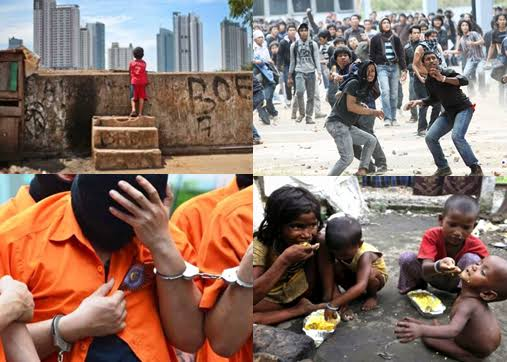
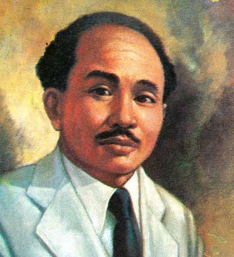
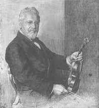
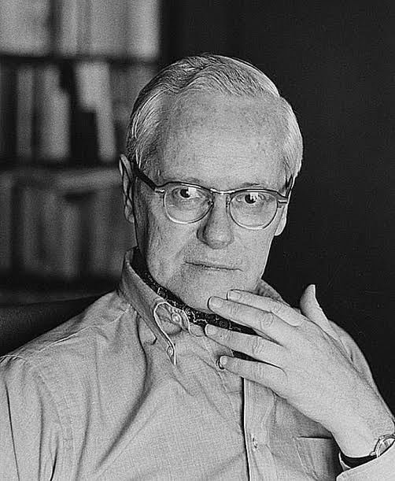
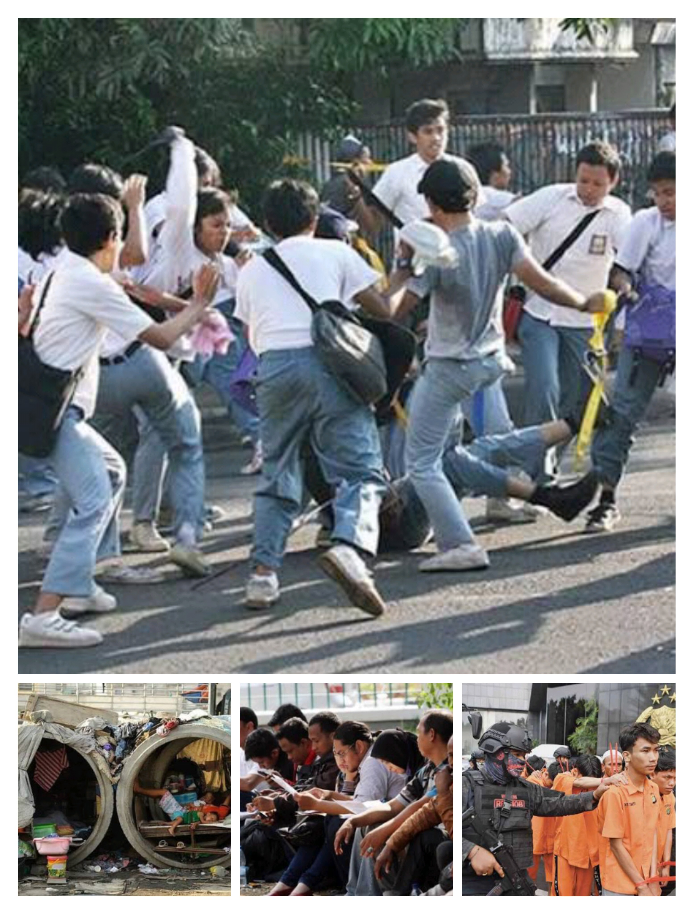

Masalah sosial adalah kondisi atau keadaan yang terjadi dalam masyarakat dan dianggap tidak sesuai dengan nilai serta norma yang berlaku. Masalah tersebut menimbulkan dampak negatif bagi kehidupan masyarakat sehingga perlu dicari solusi untuk mengatasinya

Nilai & Norma
Berikut beberapa definisi menurut para ahli yang membantu memperjelas konsep masalah sosial
Masalah sosial masalah sosial adalah suatu ketidaksesuaian antara unsur-unsur kebudayaan atau masyarakat yang membahayakan kehidupan kelompok sosial atau menghambat terpenuhinya keinginan-keinginan pokok warga kelompok sosial tersebut

Masalah sosial adalah suatu kondisi yang tidak diharapkan dan tidak sesuai dengan nilai atau norma yang berlaku dalam masyarakat, sehingga memerlukan tindakan untuk mengatasinya
Masalah sosial adalah suatu kondisi yang tidak sesuai dengan nilai-nilai masyarakat dan dapat mengganggu kehidupan sosial, sehingga perlu dilakukan perubahan atau penanganan
Masalah sosial adalah situasi yang dinyatakan sebagai sesuatu yang bertentangan dengan nilai-nilai oleh sejumlah orang yang berpengaruh, dan kondisi tersebut dianggap perlu diperbaiki melalui tindakan sosial

Masalah sosial adalah suatu kondisi yang memengaruhi sejumlah besar orang dan dianggap tidak diinginkan oleh masyarakat, sehingga perlu dilakukan tindakan untuk mengatasinya

Menurut Robert K. Merton, teori fungsional memandang masyarakat sebagai suatu sistem yang terdiri dari bagian-bagian yang saling berhubungan. Setiap bagian memiliki fungsi tertentu dalam menjaga kestabilan masyarakat

kondisi ketika seseorang tidak mampu memenuhi kebutuhan dasar seperti makanan, tempat tinggal, dan pendidikan
keadaan ketika seseorang yang mampu dan ingin bekerja belum mendapatkan pekerjaan
tindakan yang melanggar hukum dan dapat merugikan orang lain atau masyarakat
perilaku remaja yang melanggar norma atau aturan, seperti tawuran dan perundungan
penggunaan zat terlarang yang dapat merusak kesehatan dan kehidupan sosial
Masalah sosial adalah kondisi yang terjadi di masyarakat dan dianggap tidak sesuai dengan nilai atau norma yang berlaku sehingga dapat mengganggu kehidupan masyarakat. Masalah sosial dapat disebabkan oleh berbagai faktor, seperti ekonomi, pendidikan, budaya, lingkungan, dan kependudukan. Oleh karena itu, diperlukan kerja sama antara masyarakat, pemerintah, dan berbagai pihak untuk mengatasi masalah sosial dan menciptakan kehidupan yang lebih aman, nyaman, dan sejahtera.
Terima kasih atas perhatian Anda. Kelompok 2 siap menjawab pertanyaan